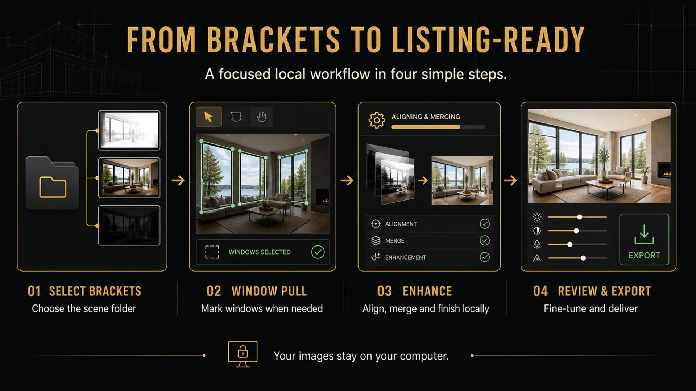
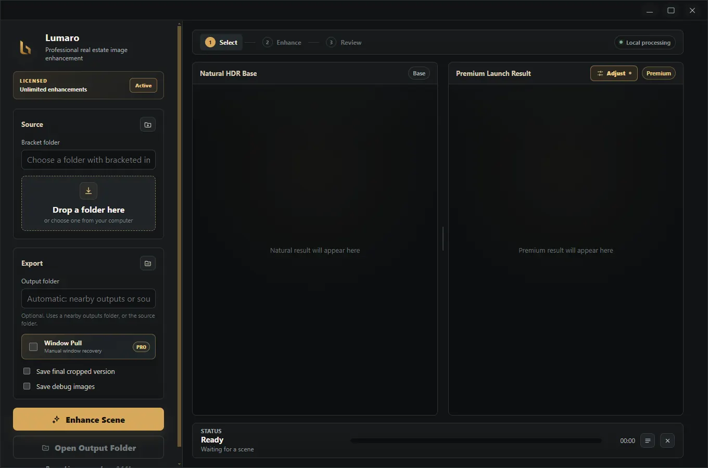
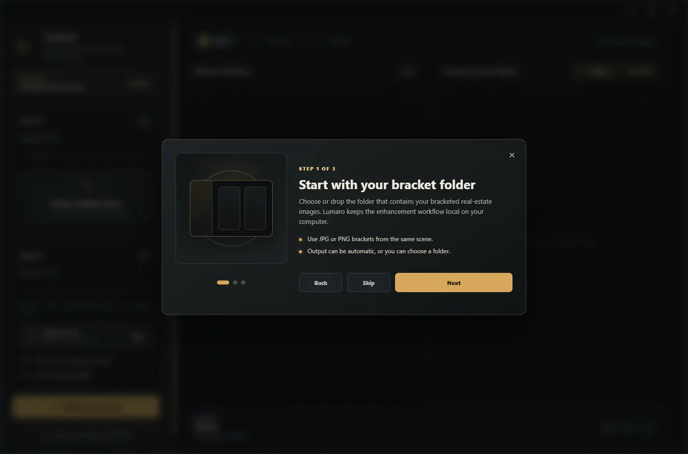
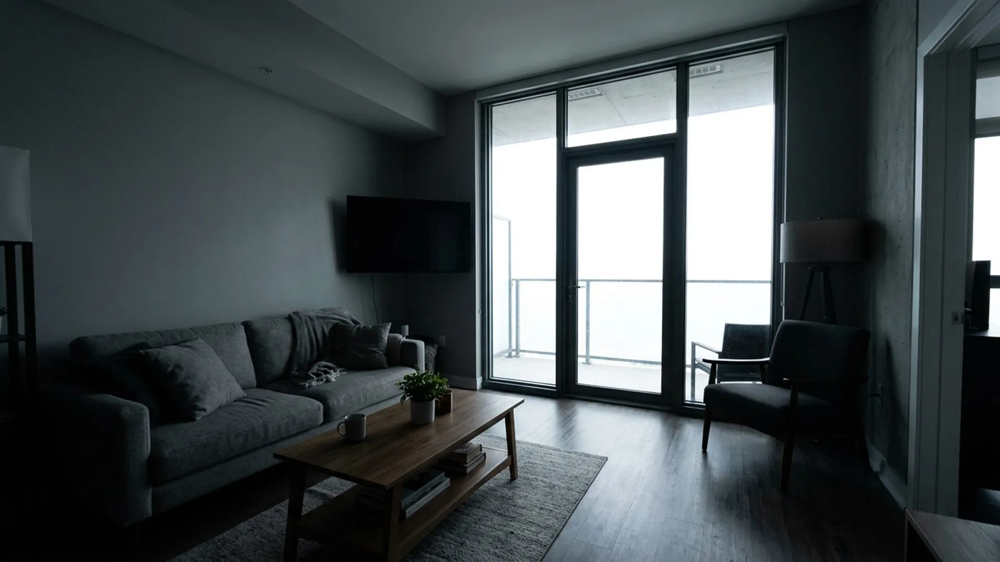
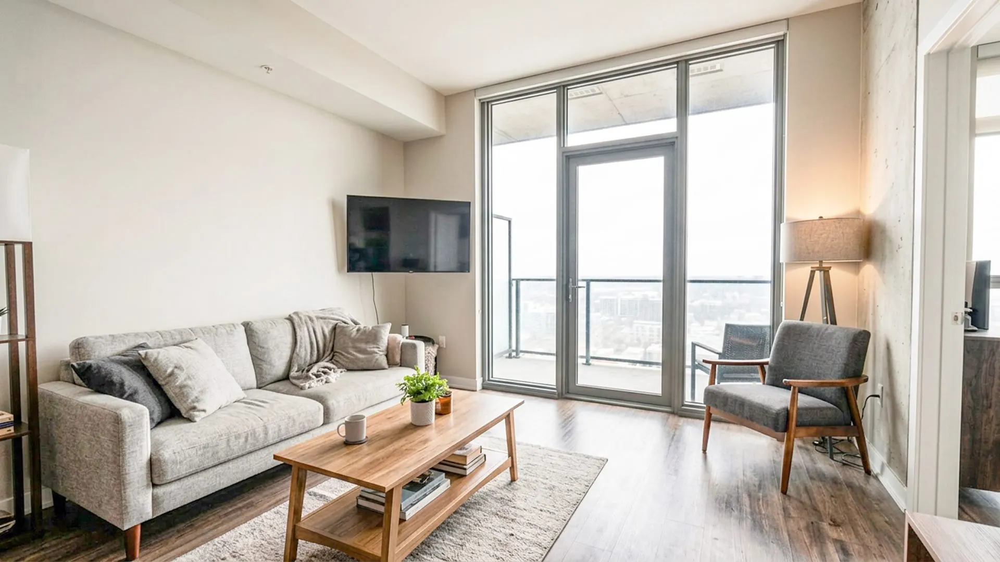

Bracket complexity
Real-estate image workflows involve multiple exposures that need to stay grouped, aligned, merged, and reviewed.
Desktop Product Design · Creative Workflow
A Windows desktop app for real-estate image enhancement. Lumaro processes bracketed real-estate photos, aligns and merges exposures, improves interior lighting, and helps preserve window detail through an optional manual Window Pull workflow.
Local workflow
natural results
Overview
Lumaro is for real-estate photographers, property media creators, and image editors who need faster listing-ready enhancement from bracketed property photos. The product reduces manual editing steps around exposure balance, window recovery, review, adjustment, and export.
The core workflow runs locally on the user's Windows computer, with selected images processed by the local Python processor rather than uploaded as part of the core app workflow.
The Problem
Real-estate image workflows involve multiple exposures that need to stay grouped, aligned, merged, and reviewed.
Users often move between folders and editing applications to complete one scene from source images to export.
The product needed to preserve window detail while keeping interiors bright and natural instead of pasted or artificial.
Property media workflows can involve client images, so local processing and clear file handling were important.
Manual Window Pull needed to be optional so users with simple scenes could keep moving quickly.
My Role
I worked as product designer, UX director, visual designer, and implementation collaborator across the app and website experience.
Product Scope
Folder selection/drop area, first-launch tutorial, enhancement dashboard, optional Window Pull selection modal, processing log, Natural HDR Base preview, Premium Launch Result preview, adjustment panel, export flow, license activation, and update notification.
Select or drop a folder, optionally enable Window Pull, draw polygon selections around windows, process images locally, review Natural HDR Base and Premium Launch Result, adjust, and export.
Folder picker, output selector, Window Pull toggle, Enhance Scene button, progress bar, processing log, preview cards, before-hold comparison, adjustment sliders, scope tabs, export button, cancel and clear result behavior.
Full-image adjustments and window-only adjustments are stored separately. Window-only adjustments use the saved feathered window mask, and export applies the same adjustment logic to the final image.
Core Workflow
Key Design Decisions
Lumaro uses folder-based selection instead of asking users to manually select each bracket, making real-estate shoot workflows faster.
Window Pull is featured but skippable, so users can recover difficult windows without slowing down simple scenes.
Window replacement happens at the Natural HDR Base stage, then continues into the Premium Launch Result for a more integrated final image.
Visible progress, status feedback, and a log/details panel make processing feel predictable.
User-facing errors include a clear message and a next-step instruction, such as selecting a source folder before enhancing.
The app stays linear: select folder, optionally select windows, enhance, review, adjust, and export.
Interface Showcase







Iteration
Major refinements included optional Window Pull, polygon selection for one or more windows, moving window replacement into the Natural HDR Base stage, window-only adjustments, sharper zoom behavior, fixed mask offset/cropping issues, clearer full-image versus window-only adjustment state, first-launch onboarding, top app menus, and separate website/trial and Store build modes.


Constraints
Outcome
External Links